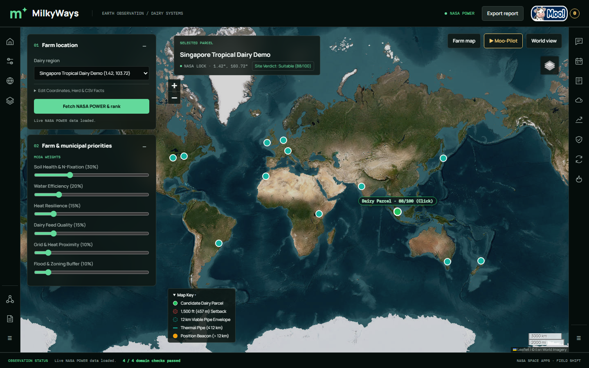
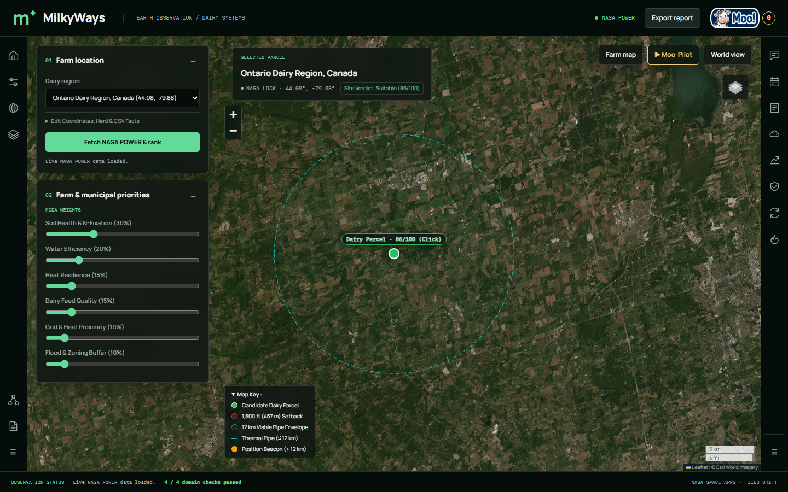
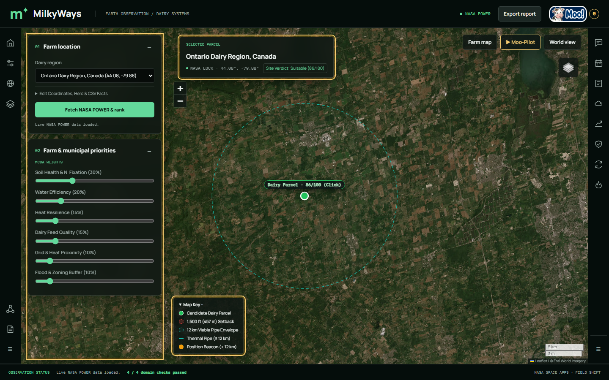
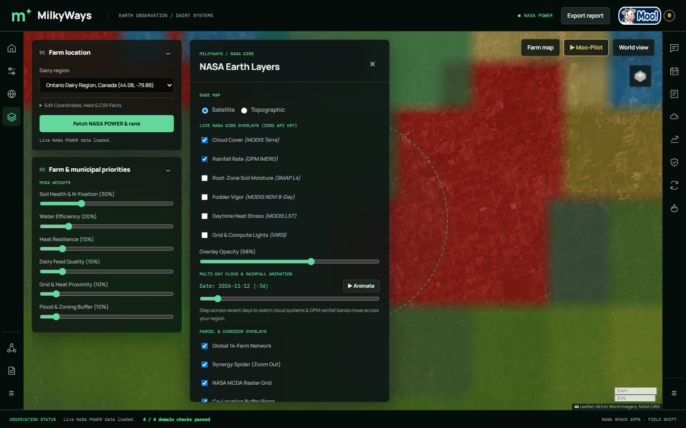
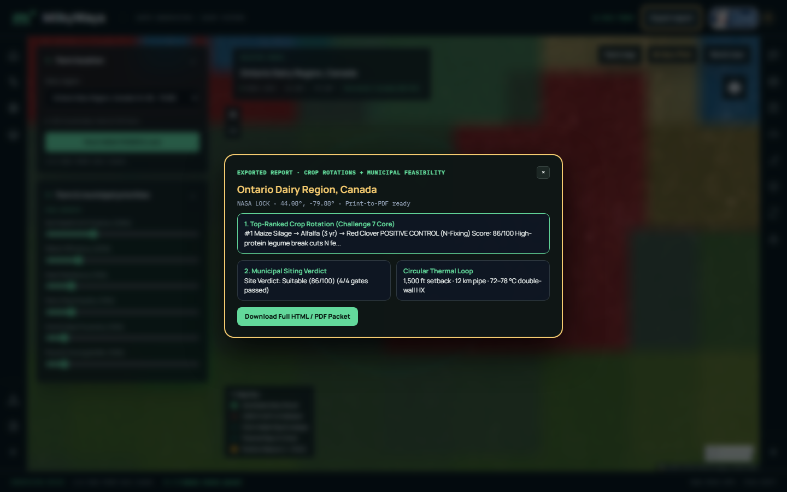

MilkyWays
Built for Challenge 7 (Field Shift: Adapting Farms with NASA Data), MilkyWays pairs live NASA agroclimatology with local soil & farm priorities to rank nitrogen-fixing fodder crop rotations—while extending the same parcel engine to candidate farm siting & municipal circular waste-heat co-location.
From 3D Earth Orbit Straight Into Any Candidate Dairy Parcel
Start on the 3D Earth globe (14 global dairy regions), then select any region—like Singapore Tropical Dairy Demo or Sheldon Creek / Ontario Dairy Region—to auto-zoom from wide Earth view straight into the parcel map with zero extra clicks.


Always-Visible HUD, Spatial Keys & Live MCDA Re-Ranking

- Always-Visible HUD: Selected parcel, live
NASA LOCKcoordinates, suitability score, and mandatory safety verdict stay pinned over the map. - Map Key: Distinguishes the candidate parcel (green),
1,500 ftwatershed setback (red),12 kmviable pipe envelope (teal), and> 12 kmPosition Beacons (amber). - Anchored Priorities: Adjust Soil Health, Water Efficiency, Heat Resilience, Feed Quality, Grid Proximity, or Flood Buffer to re-rank rotations live.
NASA Earth Layers: Moving Cloud Cover, GPM Rainfall & Soil Moisture

- Zero-Key NASA GIBS Tiles: Toggle MODIS Cloud Cover, GPM IMERG Rainfall, SMAP L4 Root-Zone Moisture, MODIS NDVI, MODIS LST Heat Stress, and VIIRS Nighttime Lights.
- Multi-Day Animation: Step or play across recent days (
-14dto-2d) to watch cloud systems and precipitation bands move across regions. - Dataset Honesty (Resolutions): Pairs
NASA POWER (~50 km),GPM IMERG (~10 km),SMAP L4 (9 km), andMODIS NDVI (250 m–1 km)with farmer CSV soil facts—because coarse satellite pixels cannot replace field soil tests.
Comparing 4 Fodder Rotations: Evidence, Benefits, Gaps & Local Risks
| Rotation Strategy | Why Suggested & NASA Evidence | Agronomic & Soil Benefits | Info Gaps & Local Review Risks |
|---|---|---|---|
| 1. Continuous Maize Silage Existing Baseline (Negative Control) |
Reference benchmark; fails N-fixation & pest-cycle checks in NASA POWER + MCDA scoring. | Familiar equipment & high short-term silage tonnage under ideal moisture. | Gap: Field residual N & pest pressure. Risk: Depletes soil N, worsens bare-soil erosion & rootworm carry-over. |
| 2. Maize Silage → Alfalfa (3 yr) → Red Clover Temperate (Sheldon Creek, ON) |
Matched to cool/frost climate (T_min < 0 °C) and loam water-holding capacity. |
Cuts synthetic N 25–30%, adds deep-root organic matter & eliminates winter bare-field erosion. |
Gap: Subsurface tile drainage & soil pH. Risk: Alfalfa winterkill or compaction on poorly drained heavy clay. |
| 3. Sorghum Silage → Cowpea → Berseem Clover Tropical / Heat-Stressed (Singapore) |
C4 heat tolerance triggered when NASA POWER T2M ≥ 18 °C or rainfall is erratic. |
High drought/heat resilience, warm-season legume N-fixation, and lower irrigation demand. | Gap: Local seed/inoculant supply & dairy ration digestibility. Risk: Monsoon waterlogging if drainage lags. |
| 4. Winter Rye / Triticale → Maize → Crimson Clover Bare-Field Cover Bridge |
Targets shoulder-season bare-field windows flagged in the 12-Month Crop & Heat Calendar. | Traps residual nitrate, suppresses weeds, and protects topsoil during snowmelt & heavy rain. | Gap: Spring termination window & planter readiness. Risk: Delayed maize seeding in wet springs. |
Exported Report: Crop Rotations Top-Billed + Municipal Feasibility

- Challenge 7 Front & Center: Directly below the city-framed Leaflet corridor map, Section 1 presents Ranked Fodder Crop Rotations & Soil Adaptation and the full MCDA weights table.
- Municipal Feasibility Packet: Section 2+ delivers herd thermal demand,
1,500 ftsetback &12 kmpipe vs. Position Beacon classification, and a staged Eval → Pilot → Result plan—ready for Print / Save PDF.
Why Gaia-Style Closed-Loop Thinking Unites Rotations & Parcels
Just as Gaia and closed-loop biosphere experiments show that soil, crops, water, and energy regulate one another in coupled feedback loops, a fodder rotation cannot be divorced from where the candidate parcel sits.
- One Engine, Multi-Use Appeal: Farmers get resilient N-fixing rotations; municipalities screen candidate parcels & circular waste-heat co-location without obscuring the agronomy brief.